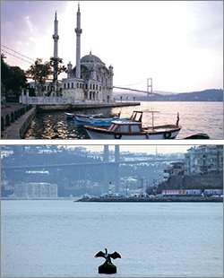
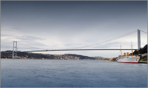
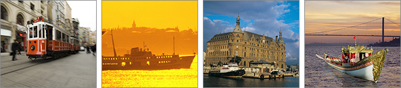

Istanbul is a city of unparalleled social and cultural richness. It is as fascinating and historical as it is dynamic and modern. Serving as the capital of two mighty empires incessantly for sixteen centuries, Eastern Roman or Byzantine and Ottoman, and set squarely between two continents, Istanbul has cultures and traditions that blend East with West and Mediterranean with Anatolian. Each civilization that has made Istanbul its home has left its mark in sublime and splendid ways, and the result a city that gives one the feeling of universal history at every step.
With a definitely multicultural touch and a vibrant atmosphere rooted deep in the past experience of humanity while facing toward the future, Istanbul is truly as much a crossroads of ideas and cultures today as ever. For how many cities in the world is home to ages old churches, mosques, and synagogues in such a close proximity, showing us the possibility of a community formed of different cultures living in a state of peace and tolerance that stems from a shared human past and belief in the future?
Geographical Location
In its south stretches the Marmara Sea and in its north is the Black Sea. Its western part is in Europe and eastern in Asia. The strategic and aesthetic strait that separates the two coasts of Istanbul together with the two continents is the Bosporus which is the first gate from the Black Sea to the Aegean and then onto Mediterranean. Being a port city and having many major trade paths pass through itself is what has given ultimate significance to the city for thousands of years
Getting There & Away

Istanbul has always been a meeting place, a crosspoint and a destination. With the Ataturk Istanbul International Airport, getting to and from Istanbul has never been easier. With a capacity of far over 25 million travelers per year Istanbul is surprisingly within reach - in fact, it's less than a three-hour flight from most European cities. Located at the crossroads of East and West, Istanbul offers easy air connections and is served by more than 50 major airlines to hundreds of cities around the world.

In addition to Ataturk International Airport, Istanbul has a second airport located on the Asian side of the city, Sabiha Gokcen International Airport, which is an important arrival point especially for charter and cargo flights and special events.
The city is reachable via ship from Italy, Greece, and other Mediterranean countries, and is in addition a major port of call for cruise lines and chartered yachts. Via land, several rail lines connect Turkey to neighboring countries as well as many bus lines which easily and affordably connect Istanbul to other cities across Turkey, Europe and the Middle East.
Highways represent another increasingly viable alternative to getting in and out of Istanbul.

Climate
Istanbul has different climate conditions from many areas of inhabitance due to its geographical location and physical geography.
| Jan | Feb | Mar | Apr | May | Jun | Jul | Aug | Sept | Oct | Nov | Dec | |
| Air | 5°C 41°F |
6°C 43°F |
7°C 45°F |
12°C 54°F |
16°C 61°F |
21°C 70°F |
23°C 73°F |
23°C 73°F |
20°C 68°F |
16°C 61°F |
12°C 54°F |
8°C 46°F |
| Water | 9°C 48°F |
7°C 45°F |
8°C 46°F |
11°C 52°F |
15°C 59°F |
20°C 68°F |
23°C 73°F |
23°C 73°F |
21°C 70°F |
17°C 63°F |
14°C 57°F |
11°C 52°F |